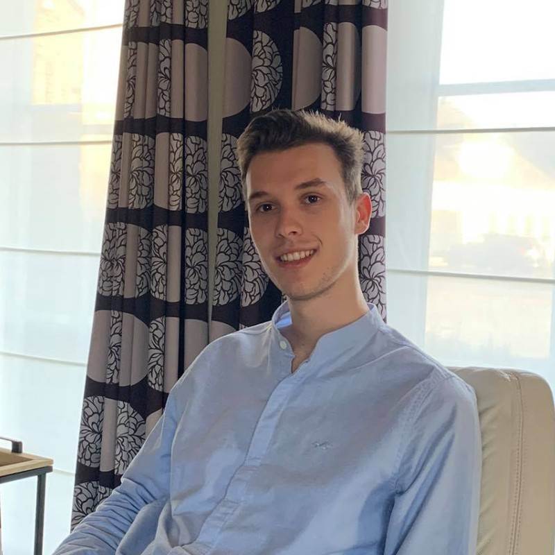
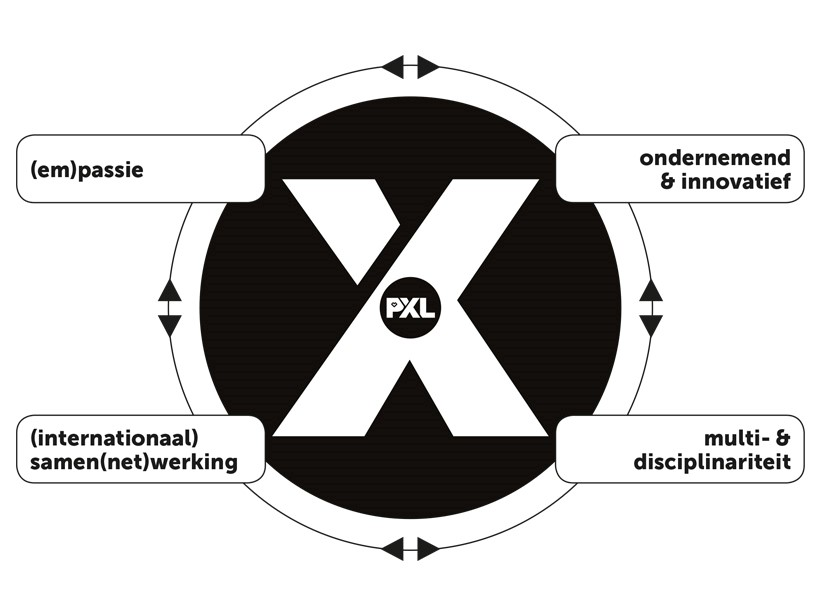
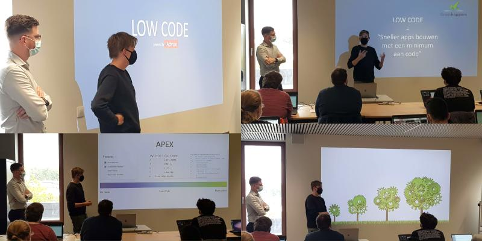
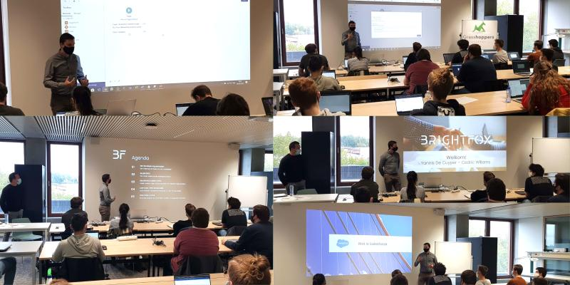
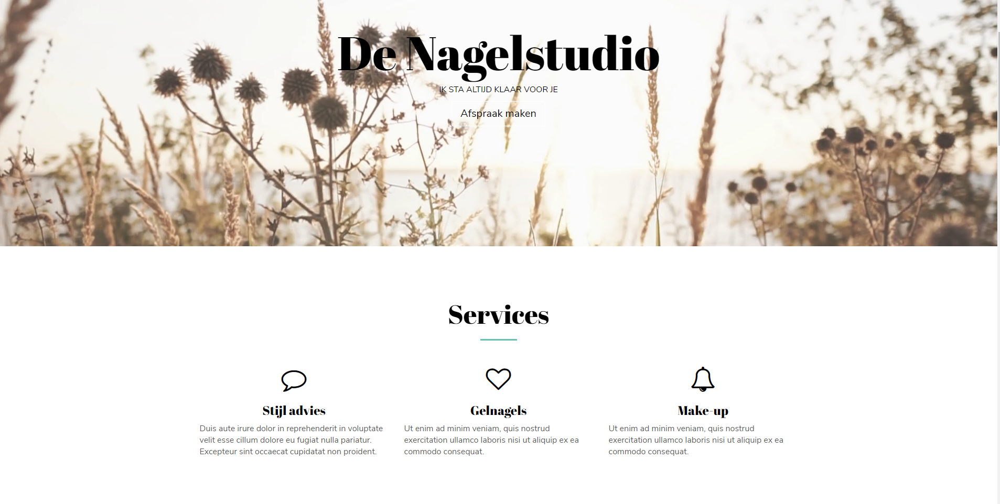
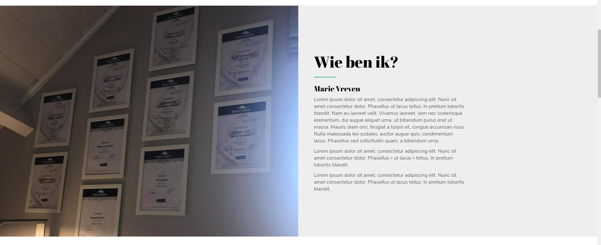
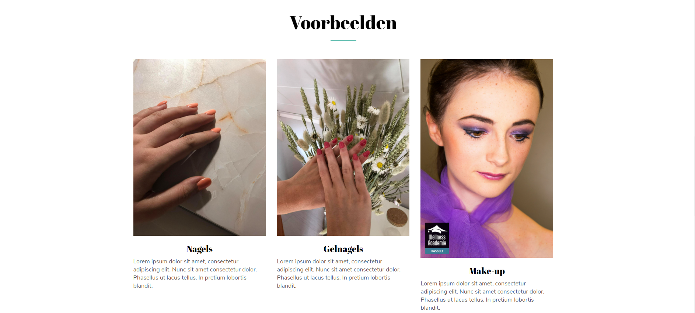
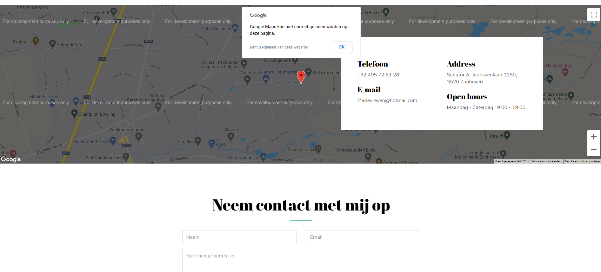

Wie ben ik
Ik ben Robbe Daemen, student aan de Hogeschool PXL. Ik studeer toegepaste informatica, met afstudeerrichting software-management. Bij software-management ligt de focus op het managen van teams en de communicatie met klanten. Daarnaast wordt er ons ook aangeleerd hoe we business problemen kunnen oplossen aan de hand van informatica. Ondanks het feit dat wij niet zoveel programmeren krijgen in deze richting, betekent dit niet dat ik hier niks van ken of kan. Wij als softwaremanagers krijgen eigenlijk het volledige pakket, maar focussen ons dan meer op de business en management kant van het verhaal. Ondanks dat ik gekozen heb voor software-management interesseert het technische aspect mij ook nog steeds. Dit zal ook iets zijn waar ik mij nog in wil verdiepen.
Wat zijn mijn interesses
De technische kant is dan ook een interesse van mij, dat zal ook blijken als er gekeken wordt naar de seminaries en extra activiteiten die ik gedaan heb doorheen de jaren. Momenteel ben ik ook nog aan het twijfelen om volgend jaar applicatieontwikkeling verder te studeren.
Een ander gebied van interesses voor mij is toch wel sport. Toen ik vijf jaar was, ben ik begonnen met voetbal om dan later toen ik tien jaar was tennis er ook nog bij te nemen. Momenteel tennis ik nog steeds elke week met mijn vrienden. Daarbovenop is lopen ook iets wat ik dagelijks doe.
Competenties en talenten
Ik zou graag eerst even willen verwijzen naar mijn Thalento-rapport en de resultaten hiervan kort bespreken. Het Thalento-rapport is een rapport dat gegenereerd is geweest aan de hand van een honderdtal vragen. Hieruit blijkt dat mijn sterkste punt samenwerken is, hier ga ik dan zelf ook volledig mee akkoord. Dit wil zeggen dat ik coöperatief ingesteld ben en het afstemmen en overleggen met anderen zeer belangrijk vindt, met andere woorden een echte teamspeler.
Het Thalento-rapport klopt grotendeels. Er staat in vermeld dat ik graag beslissingen neem vanuit een sterk pragmatisch perspectief, ze bedoelen hiermee dat mijn focus minder ligt op het in kaart brengen van problemen, maar meer op het oplossen ervan. Dit is toch wel iets wat ik vaak merk en dit is zeker iets waar ik aan wil werken naar de toekomst toe. Daarnaast wordt er ook in vertelt dat ik een uitvoerend persoon ben. Hier bedoelen ze mee dat ik nood heb aan “druk” om activiteiten met succes te vervolledigen. Hier ga ik dan ook weer volledig mee akkoord, ik ben een persoon die zeker goed onder druk presteert en zelf een beetje druk nodig heeft. Het is nodig dat de omgeving rondom mij goed aangeeft wat er moet gebeuren en tegen wanneer dit gedaan moet zijn.
In het rapport staat ook vermeld dat ik een Introvert persoon ben en dat het communiceren iets is wat mij tegenhoudt. Dit is dan iets waar ik niet mee akkoord ga, rondom mij wordt maar al te vaak vertelt dat ik een sociaal persoon ben. Communicatie is zeker iets waar ik geen moeite mee heb. Ondanks dat ik met communicatie geen moeite heb moet ik wel zeggen dat een nieuwe omgeving mij wel wat nerveus maakt. Ik vind dat het “onbekende” mij toch wel wat schrik aanjaagt. Dit is wel iets wat over de jaren veel beter is geworden, maar het blijft nog steeds een werkpunt.
De mensen rondom mij zeggen vaak ik dat een rustig en oprecht persoon ben. Daarnaast wordt er door mijn familie ook vaak verteld dat ik een zeer volwassen visie heb. Ik ben dan ook wel een persoon die zijn heel leven al ongeveer uitgestippeld heeft.
Mijn Ambities
Één van mijn ambities is om later een eigen zaak te starten. Ik denk dat dit een zeer grote uitdaging is die ik zeker wil aangaan. Het lijkt mij interessant om een idee uit te werken en dit op de markt te kunnen brengen. Dit is natuurlijk iets voor later, ik wil eerst wat werk en leerervaring opdoen. Blijven bijleren is zeker ook een ambitie van mij, vooral IT gefocust. Informatica evolueert zo snel dat er altijd bijscholing nodig zal zijn.
Vijf jaar vanaf vandaag zie ik mij nog niet direct een team leiden, ik zou eerder iets technisch willen doen binnen een team of bedrijf. Met dan de focus op Robotic Process Automation of Test automation. Ik vind dat een persoon die van de schoolbanken afkomt niet direct een team kan leiden zonder eerst zelf in een team gezeten te hebben. Ondanks dat ik binnen vijf jaar geen team wil leiden wil dit niet zeggen dat ik over vijftien jaar geen team zal leiden. Ik wil mij eerst verdiepen in wat meer technisch zaken om dan uiteindelijk de rol als Scrum Master op te nemen.
Wat kan ik en wat moet ik zeker nog kunnen?
Mijn sterkste punten zijn toch wel het rustig houden onder druk, een goede teamspeler zijn, doorzetten, sterke communicatie en het zelfstandig werken. Ik zou het later dan ook niet erg vinden moest ik alleen werken of in team werken. Wat ik zeker nog moet kunnen is mijn zenuwen onder controle houden voor nieuwe omgevingen. Ik denk dat dit iets is wat heel belangrijks is zeker als we kijken naar later. Om dit onder controle te krijgen zou ik graag trainingen, seminaries of workshops willen bijwonen. Naast dit allemaal zou ik mezelf nog verder willen verdiepen in Robotic Process Automation en web development. Dit zijn twee technische aspecten die mij ten zeerste interesseren en waar ik later ook eventueel in te werk wil gaan.
Overzicht activiteiten
(EM)PASSIE
My team and i
Dit waren een aantal sessies die ons klaarstoomde voor het researchproject. Doorheen deze dagen vonden er verschillende activiteiten plaats om een betere band te vormen met onze nieuwe teamgenoten.
- Locatie: Hogeschool PXL
- Datum: 05/03/2020
- Duur: 8 uur
- Extra activiteit: Neen
Brein aan het werk, niet storen
Tijdens deze sessie werd ons geleerd hoe onze aandacht gestolen wordt en hoe we je kunt focussen op de activiteiten die belangrijk zijn. Helpen met aandacht te verdelen afhankelijk van de prioriteiten en doelen
- Locatie: Hogeschool PXL
- Datum: 06/03/2020
- Duur: 2 uur
- Extra activiteit: Neen
Feedback the key to improvement
Tijdens deze sessie werd ons geleerd hoe we moesten omgaan met kritiek. Er werd ons zowel geleerd hoe we kritiek moesten geven en ontvangen.
- Locatie: Hogeschool PXL
- Datum: 12/02/2020
- Duur: 2 uur
- Extra activiteit: Neen
POPing
Dit was een sessie waar er gereflecteerd werd over verschillende lagen van onze persoonlijkheid. Op deze manier kunnen wij IT’ers onze persoonlijkheid doorheen onze loopbaan volledig in kaart brengen.
- Locatie: Hogeschool PXL
- Datum: 03/03/2020
- Duur: 2 uur
- Extra activiteit: Neen
Ondernemend & Innovatief
Hackaton Sint Oda
Het doel van deze Hackaton was om Games te maken voor mensen met een beperking. Dit waren vooral simpele games die gemakkelijk te spelen waren. Iedere groep kreeg een ander thema zoals Herfst, Winter, Lente of Zomer.
- Locatie: Online
- Datum: 23/02/2021 - 24/02/2021
- Duur: 18 uur
- Extra activiteit: Neen
Innovatieroute - Low Code
3-daagse uiteenzetting van verschillende externe bedrijven die Low code gerelateerde leerstof introduceerden. Een eerste aanraking met een andere manier van ontwikkelen.
- Locatie: Hogeschool PXL
- Datum: 08/10/2020, 09/10/2020 en 24/11/2020
- Duur: 16 uur
- Extra activiteit: Neen
Website beauty salon
Website gemaakt voor Marie Vreven. Zij gaat dit jaar afstuderen en wilt als bijberoep een nagelstudio openen, hier heb ik dan een website voor gemaakt. Foto’s van deze website bevinden zich in de bijlage.
- Locatie: Thuis
- Datum: 08/02/2021 – 24/02/2021
- Duur: 2 – 3 weken
- Extra activiteit: Ja
UiPath RPA Opleiding
UiPath is een programma dat gebruikt wordt voor processen te automatiseren en is één van de marktleiders als het aankomt op Robotic Process Automation. Hier heb ik een foundation opleiding van gevolgd.
- Locatie: Thuis (online)
- Datum: 22/03/2021 – 2/04/2021
- Duur: 2 weken
- Extra activiteit: Ja
Multi-& Disciplinariteit
Capgemini – Introduction to testing, Continuous testing, Unit testing and TDD
Een sessie waar er meer toegelicht werd waarom testen nu juist nodig is. Vooral een theoretisch seminarie over het nut van testen.
- Locatie: Hogeschool PXL
- Datum: 18/02/2020
- Duur: 3 uur
- Extra activiteit: Neen
Settlemint – Blockchain Part 1
Settlemint kwam ons een introductie geven over blockchain en welke soort applicaties zich bevinden op de blockchain. Daarnaast hebben zo ook toegelicht hoe blockchain kan gebruikt worden in de IT.
- Locatie: Hogeschool PXL
- Datum: 21/10/2020
- Duur: 3 uur
- Extra activiteit: Neen
Settlemint – Blockchain part 2
Dit was het vervolg op Blockchain deel 1. Hier gingen de mannen van Settlemint verder over verschillende management en identiteits modellen.
- Locatie: Hogeschool PXL
- Datum: 28/10/2020
- Duur: 3 uur
- Extra activiteit: Neen
Ericsson – Op weg naar 5G
Ericsson kwam ons een introductie geven over 5G en IoT. Ze hebben de toekomst van 5G en de technologie hier achter uitgelegd aan de hand van voorbeelden.
- Locatie: Hogeschool PXL
- Datum: 25/11/2020
- Duur: 3 uur
- Extra activiteit: Neen
Eurofins – Test Driven Development/Unit Testing
Ondanks dat ik al een testing seminarie heb gedaan, wou ik er zeker nog één hebben gedaan. Eurofins hun seminarie was een zeer praktisch seminarie waar er veel oefening gemaakt zijn geweest op het Unit testen.
- Locatie: Online
- Datum: 2/12/2020
- Duur: 3 uur
- Extra activiteit: Neen
Juvo – Explainable AI
Juvo kwam wat meer uitleg geven over hoe zij data integreren, transformeren en presenteren. Zij doen maken gebruik van AI om dit te doen, dit is volgens hen een oplossing om dataproblemen op te lossen.
- Locatie: Online
- Datum: 9/12/2020
- Duur: 3 uur
- Extra activiteit: Neen
INTERNATIONAAL SAMEN(NET)WERKING
/
Niet aanwezig door COVID-19
Selectie Activiteiten
Hackaton Sint Oda
Hackaton Sint Oda was mijn eerst hackaton waar ik ooit aan heb deelgenomen. Persoonlijk dacht ik altijd dat hackatons heel competitief en zeer technisch waren. Gelukkig heeft deze hackaton mij het tegendeel bewezen. Sint Oda had een leuk doel waarvan je wist dat je een steentje bij droeg met mensen te helpen die een beperking hebben. Door de kennis die we doorheen de jaren opgedaan hebben konden wij deze mensen helpen door informatica.
De Sint Oda hackaton was een 2-daagse bijeenkomst die jammer genoeg door de corona maatregelen online doorging. Het doel van deze hackaton was om een aantal mobile-games te maken voor mensen met een beperking. Dit waren makkelijke games die een soort van belonings-factor hadden. Natuurlijk wat voor ons gemakkelijk is kan zeer moeilijk zijn voor mensen met een beperking. Elke groep kreeg een thema toegewezen waar zijn dan vervolgens hun game rond gingen maken. De vier thema’s waren herfst, winter, lente en zomer. Wij als team hadden het thema herfst gekregen. Dit thema had als richtlijn een boom waar de blaadjes één voor één moesten vallen als er op deze gedrukt werden. Daarnaast moest er ook een soort niveau systeem aanwezig zijn zodat het spel ook moeilijker gemaakt kon worden.
We hadden besloten om de mobile-game in Unity te maken, jammer genoeg had niemand van ons team hier ervaring in. We besloten om de boom samen met de blaadjes met ons allen te maken. Uiteindelijk zijn er dan wat taken verdeeld geweest onder ons. Mijn taak was het maken van een timer die begon te tellen zodra het spel begon. Met behulp van internet had ik al redelijk snel een werkend script geschreven voor de timer. Daarnaast heb ik dan ook nog een eind scherm gemaakt waar de score op kwam te staan en een reset knop. Deze knop zorgt ervoor dat de boom terug blaadjes krijgt en de timer terug op 0 komt te staan. De rest hield zich ondertussen bezig met het laten vallen van de bladeren en de animaties hiervan. Dit was dan ook het deel dat moeizaam verliep, het probleem waar we mee vast zaten was dat het ons niet lukte om nieuwe bladeren toe te voegen en deze hetzelfde effect te geven. Hierdoor hadden we direct ook al problemen met het niveau systeem dat we uiteindelijk jammer genoeg niet af hebben gekregen.
We zijn grotendeels klaar geraakt met alles wat we wouden, het enige dat jammer genoeg niet afgeraakt is geraakt was het niveau systeem. Zoals eerder vernoemd hadden we op dag 1 wat problemen met het laten vallen van de bladeren, uiteindelijk met wat behulp van internet hebben we dit toch aan de praat gekregen. Uiteindelijk hebben we zo goed als alles kunnen opleveren wat er van ons verwacht werd. We hebben een Android game gemaakt voor op mobile of tablet die volledig responsief is. Wanneer de game geopend is en er op de start knop wordt gedrukt zal er een rustig muziekje afspelen als achtergrondgeluid, als er op een blad wordt gedrukt zal dit blad rustig naar onder dwarrelen. Als alle bladeren gevallen zijn zal het spel stoppen en de tijd tonen hoelang de persoon hierover heeft gedaan met daaronder een reset knop. Elk blad dat valt heeft ook een verschillend blad geluid die wij zelf hebben opgenomen. Als team waren wij heel blij met het resultaat dat wij hebben kunnen opleveren zonder enige ervaring in Unity of in het ontwikkelen van games in het geheel.
Tijdens deze hackaton heb ik jammer genoeg geen leerstof kunnen toepassen die ik het laatste ander halfjaar in softwaremanagement heb gezien. Aan de andere kant heb ik wel veel bijgeleerd over Unity en hoe een mobile game ontwikkelen in zijn werk gaat. Doorheen de hackaton krijg je natuurlijk wel wat extra ervaring hoe het nu juist is om in een team te werken, doorheen deze 2 dagen waren er geen enkele problemen ontstaan in ons team. De problemen die ik zelf ondervonden had hadden te maken met de mindere kennis die ik had in het coderen. Deze hackaton was dan ook puur en alleen coderen, ondanks mijn mindere kennis vergeleken met mijn teamgenoten heb ik toch een heel stuk zelfstandig kunnen maken. Ik vond dit een zeer interessante hackaton waar ik met plezier nog eens aan zou willen deelnemen, niet alleen was het enorm leerrijk maar het was ook nog eens voor een soort goed doel. Wetende dat ik heb meegeholpen aan een project waar er games gemaakt worden voor mensen met een beperking zorgt toch wel voor een glimlach op mijn gezicht. Daarnaast heb ik ook weer eens een andere kant van ontwikkelen gezien, doorheen de opleiding wordt er niet zo vaak gesproken over games ontwikkelen maar eerder over applicaties die in het werkleven gebruikt worden. Nu weet ik zelf al iets meer hoe dit te werk gaat en hoeveel tijd het eigenlijk kost om een game te maken. Dit zijn dan ook allemaal redenen waarom ik ervoor heb gekozen om deze opdracht te bespreken in mijn portfolio en mijn ervaring te delen.


Innovatieroute Low code
Deze 3-daagse innovatieroute ging ons een ander perspectief van het ontwikkelen laten zien. De bedrijven Brightfox, iAdvise en Providit gaven ons zowel een theoretisch stukje als een praktijk stukje over low Code. Doorheen de opleiding had ik al eens gehoord van low code en no code, maar ik wist nooit wat dit nu precies inhield. Daarom dat ik de keuze heb gemaakt om deze innovatieroute te volgen.
De innovatieroute ging van start met het bedrijf Brightfox. Brightfox is een Salesforce consulting partner, zij gebruiken het platform van Salesforce om een oplossing te vinden voor bepaalde uitdagingen. Er werd eerst een korte uitleg gegeven over wat low code nu precies is en waarvoor het gebruikt kan worden. Vervolgens zijn we wat praktischer te werk gegaan met het Salesforce platform. Brightfox heeft ons getoond wat er allemaal mogelijk is in Salesforce en hoe makkelijk het gebruikt kan worden. Na de uitleg van Brightfox kregen we de visie van iAdvise te horen. IAdvise bouwt vooral intuïtieve webapplicaties die processen binnen het bedrijf versnellen, zij maken deze applicaties op het low code platform Oracle Apex. Er kon al direct geconcludeerd worden dat de Low code technologie heel breed is. Als we kijken naar Oracle zien we dat hier de focus echt gelegd wordt op het bouwen van webapplicaties, terwijl Salesforce veel meer is dan alleen een platform waar applicaties op gebouwd kunnen worden. Na de uitleg hebben we een paar opdrachten gekregen die we moesten maken in Oracle Apex. Deze opdrachten waren dan vooral kleine applicaties, het eerste wat mij opviel bij het maken van deze opdrachten is dat alles heel simpel en snel verliep. Veel van de stappen die bij het klassieke development verhaal uren zouden duren had je hier op een aantal minuten gemaakt. Als laatste zijn we dan ook nog tewerk gegaan met het Outsystems low code platform. Het bedrijf Providit maakt gebruik van dit systeem om hun web/mobile applicaties te ontwikkelen. Providit vindt dat bedrijven snel moeten evalueren om de markt altijd te kunnen volgen, de manier om deze verandering snel en veilig te handelen is door het maken van low code applicaties. Deze applicaties kunnen enorm snel gebouwd worden volgens hun door de makkelijk te gebruik low code platformen. Zij staan er dan ook achter dat low code het klassieke development verhaal in de toekomst volledig zal vervangen.

Het low code verhaal blijkt toch sterker en groter te zijn dan ik had gedacht. Het is indrukwekkend wat er allemaal mogelijk is op deze platformen. We hadden van Providit de opdracht gekregen om een volledig responsieve web app te bouwen die bestaande klanten informatie bijhield. Het creëren van een traditionele webapplicatie was zo simpel als het drukken op 2 knoppen. Vervolgens moest er een datamodel gemaakt worden, dit datamodel kon gemaakt worden zonder enige lijn code te schrijven. De webpagina konden we gewoon uit een lijst met voorbeelden slepen, deze kon dan aangepast worden door tekstvlakken, knoppen, tabellen… toe te voegen. Binnen het uur van de opdracht gekregen te hebben had ik een volledig responsieve webpagina waar klantengegevens op getoond werden gemaakt. Ik vind dat dit wel aantoont dat er zeker een grote toekomst voor low code te wachten staat, en dat Providit wel eens gelijk zou kunnen hebben over het feit dat low code het klassieke development verhaal volledig zou kunnen vervangen. Ik weet zelf natuurlijk niet wat er juist wel en niet mogelijk is. Er is een reden dat klassieke development momenteel nog steeds de norm is als het aankomt op ontwikkelen.
Na deze drie dagen ben ik wel zeer geïnteresseerd geraakt in het hele low code/no code verhaal. Ik vond het leuk dat low code de vervelende stukken van ontwikkelen wegneemt maar dat er nog steeds coderen aanwezig is. Ik geloof er dan ook zelf persoonlijk in dat low code het klassieke development verhaal in de toekomst zou kunnen vervangen. Dit zijn dan ook allemaal redenen dat ik in mijn vrije tijd wat meer opzoek werk heb gedaan naar low code en waar het eigenlijk allemaal gebruikt wordt. Zo heb ik ondervonden dat veel automation technieken zoals RPA, DPA, PD … allemaal gebruik maken van low code of no code platformen. De innovatieroute was dan ook de eerste aanraking die ik had met low code, daarvoor had ik er kort even van gehoord. Wat ik van low code wist was dat het een manier van ontwikkelen was waarvoor geen code geschreven moest worden. Dit is na de innovatieroute een volledige foute uitleg want er moet nog steeds code geschreven worden voor bepaalde stukken. Low code neemt eigenlijk gewoon de vervelende of herhalende stukken van het ontwikkelen weg. Daarnaast heb ik ook het geluk gehad om mijn stage mogen te gaan doen bij B_Robots. Waar ik naast het leren over process automation en meer specifieker Robotic Process Automation ook mag gaan onderzoeken of low code/no code het klassieke development verhaal kan vervangen. Deze innovatieroute was voor mij een goede basis en heeft duidelijk interesse opgewekt.
Ik denk dat het een mooie toevoeging zou zijn als er binnen de opleiding (Toegepaste informatica) ook een aantal lessen worden gegeven over low code. Ik denk dat dit de toekomst is en dat het geen slecht idee is om als junior collega hierover te leren en na te denken.

Website Beauty Salon
Marie Vreven is een pas afgestudeerde student die lerarenopleiding heeft gevolgd. In haar vrije tijd volgt zij ook nog opleidingen op de Wellnes Academie. Momenteel ligt haar focus vooral op gelnagels zetten en gelaatsverzorging. Zij wil op het einde van het jaar volledig van start gaan met haar beauty salon. Natuurlijk als een pas beginnende ondernemer is een website het ideale kanaal om nieuwe klanten aan te trekken of te benaderen.
De website is een informatiebron die vooral een duidelijk beeld geeft over wie Marie is en wat zij nu juist allemaal kan. Het eerste wat je dan ook ziet als je op de website terecht komt zijn haar services, met andere woorden wat zij nu juist allemaal kan. Momenteel staat er alleen nog maar stijl advies, gelnagels en make-up bij. Ondanks dat Marie meer diploma’s heeft is dit een bewuste keuze geweest om deze drie er alleen maar tussen te zetten. Door de opmaak van de webpagina kunnen er gemakkelijk andere services aan toegevoegd worden, elke service dat toegevoegd wordt zal gewoon mooi eronder terecht komen. Marie had ook graag een persoonlijke toevoeging aan haar website gehad, daarom als we naar onder scrollen zien we een foto met marie haar diploma’s en een plaats waar zij een mooie introductie kan schrijven over haar eigen. Vervolgens zien we eronder een aantal voorbeelden van Marie haar werk die ze graag wou tonen. Net zoals bij de services kunnen er hier altijd extra voorbeelden aan toegevoegd worden. Als laatste zien we helemaal vanonder nog wat contactgegevens staan samen met een google map van haar adres. Hieronder bevindt zich nog een klein contactformulier waar mensen een afspraak zouden kunnen maken of een vraag kunnen stellen. Door het gebruik van CSS en de juist klassen kunnen de kleuren en de stijl van de website zeer makkelijk veranderd worden moest Marie dit willen in de toekomst. Het duurt nog een hele tijd voordat zij met haar beauty salon gaat beginnen dus tegen die tijd kunnen er nog allemaal veranderingen komen. Het enige wat momenteel nog mist is een prijzen pagina, waarvan zij dat momenteel nog niet wou. Marie weet zelf haar prijzen nog niet en weet daarnaast ook nog niet of ze deze op haar website wil tonen.

We zien bij het bezoeken van de website dat het een one-page website is. De naam zegt het eigenlijk, één pagina is momenteel voldoende om alle informatie te tonen en interactie te voorzien tussen de klant en Marie. Omdat Marie nog niet volledig van start is gegaan met haar beauty salon zijn er nog wat missende tekstvlakken die nog ingevuld moeten worden door haarzelf. Daarnaast zou er de mogelijkheid zijn om een extra pagina toe te voegen waar eventueel de prijzen op te zien zijn. Vanonder in de footer worden er ook links gelegd naar de sociale mediakanalen (Twitter, Facebook, LinkedIn), op deze manier is er nog een extra vorm van interactie aanwezig tussen haar en de klant. Er zijn een aantal bootstrap elementen gebruikt geweest bij het maken van de website. Bootstrap is open source en makkelijk te gebruiken, daarnaast is het ook nog eens gratis dus dat maakt het alleen maar beter voor mij als student. De website is geschreven in HTML, CSS en Javascript. Door het massale gebruik van deze technologieën is er veel hulp te vinden op het internet. Bootstrap was een enorme hulp doorheen het maken van de website, bootstrap bespaart veel tijd als het aankomt op het CSS-gedeelte.


De interesse voor web development is al een tijdje aanwezig. Daarom dat ik deze extra uitdaging ben aangegaan. Toen Marie naar mij toe kwam en vroeg of ik haar website wou maken had ik hier ook meteen zin in. Het maken van websites is echt iets wat ik graag doe en ook iets waar ik een soort rust uit kan halen. Na het tonen van deze website aan een paar andere mensen heb ik ook direct een aantal vragen gekregen of ik ook hun website zou willen maken, hier ben ik dan ook met plezier op ingegaan. Het ontwikkelen van websites is een makkelijke manier om een centje bij te verdienen door iets te doen wat ik graag doe. Natuurlijk als we gaan kijken naar wat ik kan en wat een officiële webdesigner kan, zien we natuurlijk een groot verschil. Ik moet nog heel veel leren als het aankomt op het ontwikkelen van websites. Ik vind dat ik nog veel moeite heb met CSS, gelukkig heeft bootstrap mij hier enorm mee geholpen. Dit is dan ook zeker een raakvlak waar ik nog veel op zou kunnen verbeteren.
Naast het ontwikkelen vond ik het onderzoeken naar de noden en wensen van de klant ook zeer interessant. Dit is dan wel weer iets waar ik meer ervaring mee heb door mijn afstudeerrichting. Ondanks dat ik toch voor softwaremanagement heb gekozen verliep het ontwikkelen zeer vlot, dit kan ook komen door mijn interesse in het ontwikkelen van websites. Voor mij persoonlijk was dit een zeer geslaagde opdracht waar ik veel ervaring heb kunnen uithalen. Web development is een leuke interesse voor mij waar ik uren in mijn vrije tijd mee bezig zou kunnen zijn.

A Capgemini – Introduction to testing, Continuous testing, Unit testing and TDD
Introduction to testing mijn eerste seminarie tijdens mijn opleiding. Zeer benieuwd naar wat een seminarie nu juist inhoudt en hoeveel het verschilt van gewoon les. De mannen van Capgemini waren zeer relaxed en begonnen het seminarie al direct met een paar grapjes. Doorheen het eerste semester van het tweede jaar had ik tijdens .NET al wat testing gezien. Ondanks dat ik al een beetje testen had gezien was ik nog steeds zeer benieuwd of de mensen van Capgemini het testen eventueel anders aanpakken.
Het seminarie begon zeer enthousiast met eerst een toelichting in de praktijk waar we het over gingen hebben. Ze begonnen met een voorbeeld van “ShadowINC”, dit bedrijf digitaliseert alles wat je maar wilt maar ze hebben een grote fout gemaakt waardoor ze failliet zijn gegaan. De fout kwam niet door het programmeren zelf maar het kwam eerder door de requirements. Omdat ze het systeem niet goed genoeg hadden getest kwam er een bottleneck in de infrastructuur. Dit kon allemaal vermeden worden door testen te schrijven. Als er iets verkeerd gaat in de IT-wereld dan gaat het altijd goed verkeerd en verliezen veel mensen veel geld. Dit was iets belangrijks dat wij moesten onthouden omdat als het je eigen schuld is dat het hoogstwaarschijnlijk van jouw loon af zal gaan. Vervolgens hebben ze kort even uitgelegd waar de complexiteit vandaan komt in de IT-wereld. We kregen ook een korte toelichting over de stappen die er zijn voor het maken van een app of website: requirements -> architecture & design -> development -> testing -> release. De drie hoofdmethodes om fouten te vermijden werden ook kort toegelicht samen met de verschillende vormen van Automation. Na wat introductie over het testen hebben ze uitgelegd wat nu juist Continous testing is. Dit was een term waar ik nog nooit van had gehoord voor het seminarie, doorheen het tweede semester en doorheen het laatste jaar komt deze term natuurlijk wel vaker boven. Ze hebben een duidelijke uitleg gegeven aan de hand van een voorbeeld, hierdoor was het eigenlijk direct duidelijk en had ik een zeer duidelijk beeld waarom deze manier van testen zo goed is. Uiteindelijk zijn we dan iets meer praktijk gericht gaan kijken, namelijk het Unit testen. De mannen van Capgemini hebben een aantal voorbeelden van Unit testen getoond en deze overlopen met ons. Zo hebben ze ons vertelt dat opmaak van een Unit test zeer belangrijk is, hoe zij de opmaak van hun testen schrijven was door Arrange, Act en Assert (AAA) te gebruiken. Op deze manier wordt er eerste data geïnitialiseerd, vervolgens wordt het gene wat je wil testen uitgevoerd en als laatste wordt er gekeken of de data gelijk is aan wat er getest is geweest.
In het praktijk gedeelde moesten we zelf een paar Unit testen schrijven en deze kort toelichten. Er werd eerst stap voor stap uitgelegd hoe we dit moesten doen, natuurlijk wist ik dit al allemaal door het vak .NET advanced daarom was dit vooral herhaling voor mij. We mochten per twee wat testen schrijven op een stukje code dat ons gegeven is geweest. Vervolgens zijn er een paar mensen naar voor geroepen geweest die ons hun test cases mochten laten zien. Deze test cases hebben we dan overlopen en gekeken naar wat er nu juist beter kon. Het viel toch wel op dat sommige niet gebruikt maakten van het AAA-patroon. Dit is iets heel belangrijks om dat dit een duidelijk overzicht geeft over een Unit test. Op het einde zijn we dan iets dieper ingegaan op de theorie van het testen en dit waren dan vooral wat nieuwe dingen.
Ik vond deze sessie uiterst nuttig vooral het theorie gedeelde waar werd verteld hoe wij als studenten later in het bedrijfsleven zoveel mogelijk fouten kunnen vermijden door de verschillende vormen van testen toe te passen in de praktijk. Het voorbeeld dat de mannen van Capgemini gaven was direct een aandachtstrekker, hoe het schrijven van testen een bedrijf zoveel problemen kon vermijden was echt verbazingwekkend. Veel van de theorie die werd toegepast wist ik nog helemaal niks van, zoals dat programma’s een 99% uptime moeten hebben per jaar. En ook dat een groot percentage van omzet eigenlijk komt door testing. Testing bespaart op deze manier veel geld, en zorgt zo voor meer omzet. Het praktijk gedeelde was eigenlijk 95% herhaling dus dit vond ik wat minder nuttig maar wat opfrissing kan nooit kwaad. Vond het zeer interessant dat tijdens het praktijkdeel ook de theorie werd toegelicht. Ik had persoonlijk nog wat meer informatie gekregen over het Continous testing. Dit was dan ook het deel wat nieuw was voor mij en hier wat praktijkgerichte voorbeelden bij zijn was uiterst nuttig. Wat ik vooral van dit seminarie heb geleerd is dat testing uiterst belangrijk is en veel geld kan besparing op lang termijn. Hoe vervelend testing ook is, dit is een deel van wat wij later allemaal moeten gaan doen in ons werkleven. De reden dat ik deze activiteit wou bespreken is vooral omdat dit seminarie mij het meeste bijgebleven is. Van alle seminaries was dit het meest interessante, ook al vind ik persoonlijk testen schrijven heel vervelend. Toch heb ik hier het meeste uit geleerd.
Eindreflectie
Als ik nu terugkijk naar de afgelopen 3 jaar dan zie ik iemand die veel heeft bijgeleerd. Ik ben altijd al een rustig persoon geweest die zijn toekomst redelijk goed voor zich zag. Als ik terugkijk naar de doelen die ik voor mezelf heb gesteld moet ik toch zeggen dat ik deze behaald heb. Ik ben enorm trots op mezelf dat ik deze studie heb kunnen afronden in 3 jaar met maar 1 herexamen te hebben. Daarnaast ben ik ook geëvalueerd als persoon, toen ik op de PXL begon was ik een redelijk verlegen persoon die overal nerveus voor was. Vergeleken met nu ben ik dan toch een persoon die zeer sterk in zijn schoenen staat die nog voor weinig schrik heeft.
Doorheen het middelbaar heb ik sociale wetenschappen gedaan, een richting waar je veel leert over psychologie. Toegepaste informatica is natuurlijk iets totaal anders, in het eerste jaar had ik dus ook veel twijfels of dit wel iets voor mij was. Ik ben gelukkig dat ik toen heb doorgezet en niet heb opgegeven. In het tweede jaar heb ik toch wel een twijfelmomentje gehad over mijn afstudeerrichting. Ik twijfelde tussen software-management en applicatieontwikkeling (Full stack). Ik heb uiteindelijk toch gekozen voor software-management omdat ik niet de persoon zou zijn die 8u per dag achter een scherm wou zitten. Nu blijkt het toch aan de hand van mijn keuzes dat dit toch eventueel iets voor mij zou kunnen zijn. Hier ben ik dan ook totaal nog niet aan uit, en ik denk dat werkervaring mij hierbij zal helpen.
Ik ben momenteel volledig klaar om van start te gaan in de IT-sector. Ik heb zoveel skills bijgeleerd over de laatste 3 jaar. De skills die het meeste zijn geëvolueerd zijn toch wel de communicatie skills, vooral het schrijven en het presenteren. Als we dan meer gaan kijken naar het technische vlak, denk ik dat alleen maar heb bijgeleerd. Toen ik begon aan deze opleiding wist ik heel weinig van informatica af. Om te kunnen zeggen dat ik nu websites, applicaties, businessplannen … kan maken is echt indrukwekkend vind ik persoonlijk. Mijn sterktes zijn momenteel toch wel het communiceren binnen een team en met een klant. Daarnaast heb ik ook een zeer goed stressniveau wat gegroeid is doorheen de jaren. Dit zijn toch wel mijn twee sterktepunten, naast mijn weide kennis van informatica tot business dan.
Momenteel ben ik nog aan het twijfelen of ik volgend jaar applicatieontwikkeling ga verder studeren op de PXL. Nu ik nog jong ben wil ik zoveel mogelijk leren en zoveel mogelijk informatie opnemen. Als ik zou gaan werken hoop ik dat mag beginnen op een bedrijf waar ook de focust ligt op het blijven bijleren. Informatica evolueert zo snel dat er altijd bijscholing nodig zal zijn, dit is dan ook iets waar ik achter sta en zelf ook noodzakelijk vindt.
Ik denk dat ik toch wel heb kunnen aantonen dat ik de X-Factor heb. Jammer genoeg is door het corona virus het (inter)nationale samenwerking niet naar boven kunnen komen. Ik vind dit persoonlijk zeer jammer want ik had graag dit deel van de X-Factor ook nog willen bezitten. Daarnaast heb ik wel duidelijk doorheen mijn portfolio kunnen aantonen dat ik opensta voor bijleren en groeien, zowel op gebied van kennis als op gebied van een goed mens zijn. Graag wil ik mezelf blijven pushen doorheen mijn toekomstige carrière, om hopelijk op een dag mijn eigen zaak te starten.